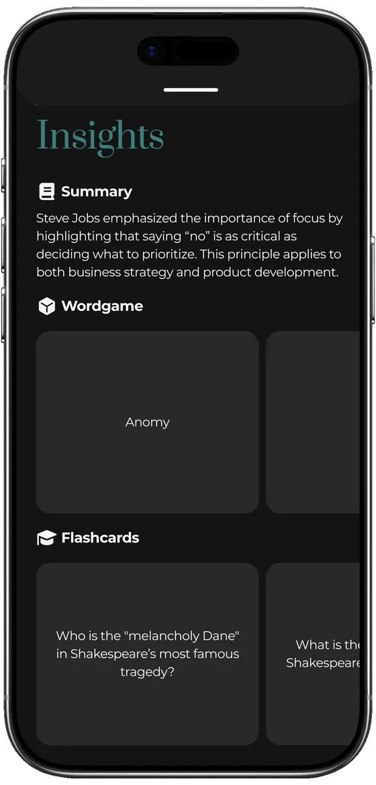
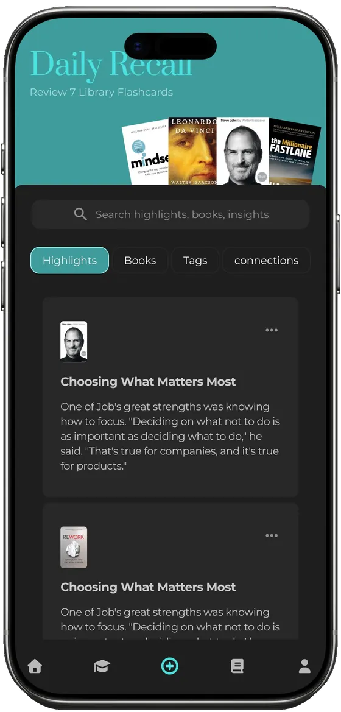
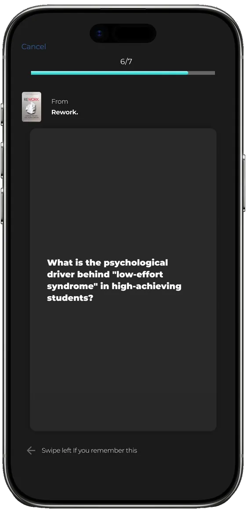

Case study
Mobile app · 2025–26
Solo — research → design → build
Daily Recall
Scan a page you read and the app turns it into a summary, a word game and spaced flashcards — so the idea survives past the highlight.
A reading-retention app for people who highlight everything and remember nothing. I designed the capture → insight → recall loop, then rebuilt it as a working app and tested it on the same people I'd interviewed.


